Crew Walkthrough
Every screen and state after the rev-3 redesign — plain day circles with letters above (green done, red missed, blue planned), iMessage-style chat, one settings page, Monday auto-lock weeks, admin-approved rule changes. All real captures of the running app. Reply with feedback per section number (e.g. "3: make the stake chips bigger") and it goes straight into the build. The reminders:64 label and the two pill buttons under strips are dev-only chrome — they don't ship.
Welcome → you → health
Three screens, then done. Sign in with Apple, your name, the honest Health ask — workouts pull automatically; hand-typed entries never count, anywhere.
- Skipping Health leaves a working app with a connect banner.
- Google sign-in is fully built (PKCE, no SDK) — the button appears the moment the OAuth client id is pasted into project.yml (TESTFLIGHT.md step). Shown here with a test id.
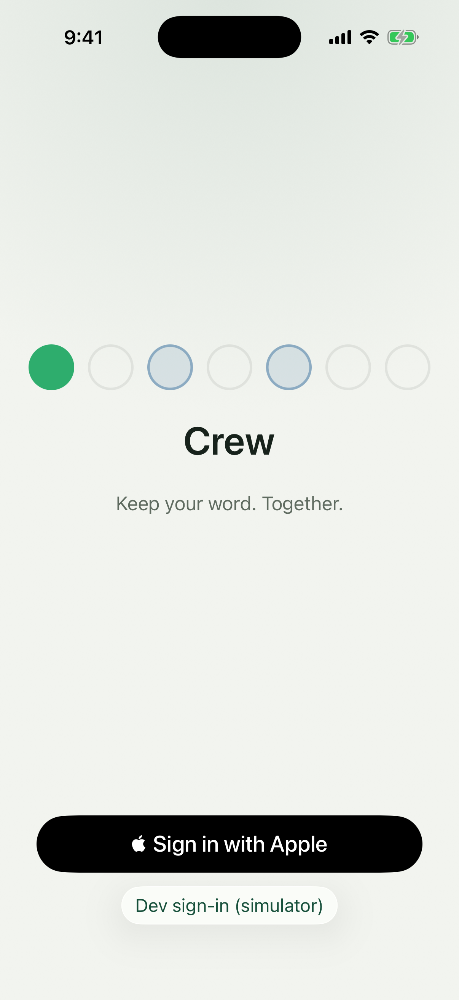
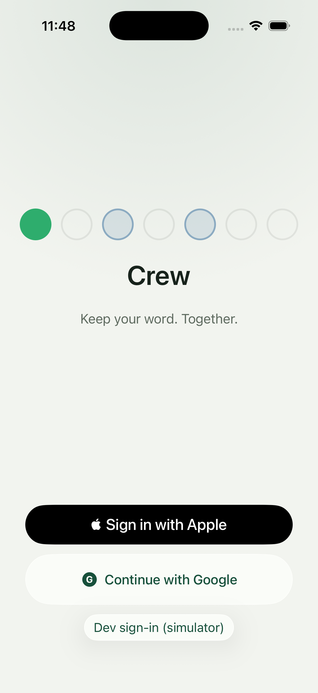
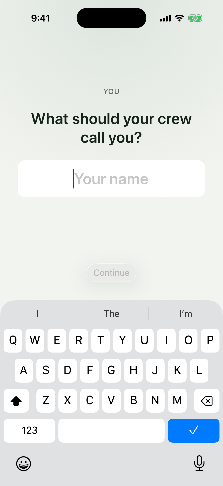
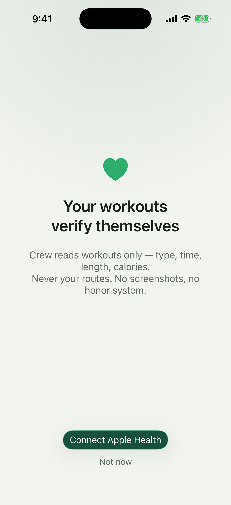
One crew. Two paths in.
No crew yet → this is the whole screen. One crew at a time; once you're in, the crew IS the app.
- Create or join while already in a crew → refused server-side.
- Account (top-left): photo, name, Venmo + Zelle handles. Streaks live in the weekly recap now.
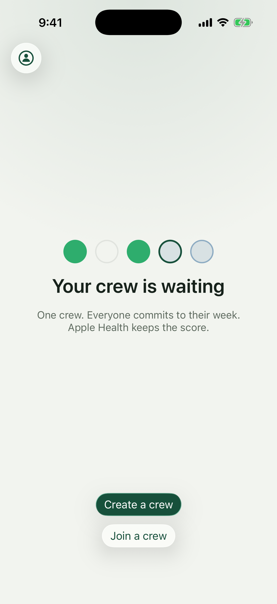
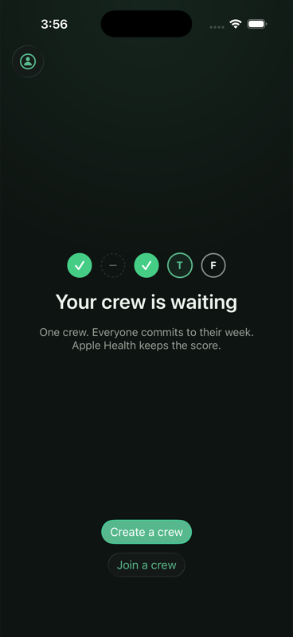
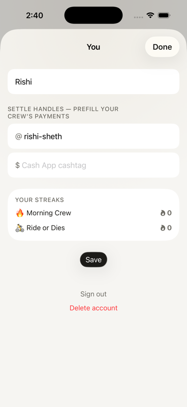
Identity, then the contract
Name, an optional crew photo (the monogram carries it until then), color, the crew clock — then the group's rules with every default pre-chosen: stake chips, 20/30/40 minimum, passes. Weeks are always Mon–Sun and lock themselves Monday — nothing to configure.
- Calorie floor and stacking live behind one disclosure.
- Any rule can be changed later by request → admin approval (section 8).
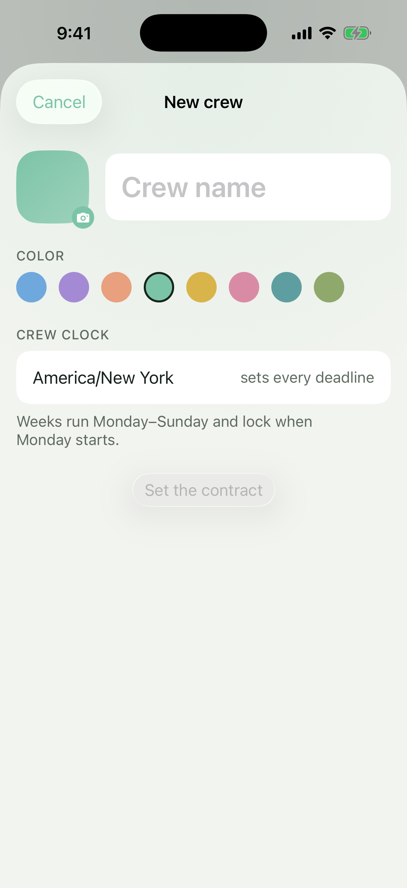
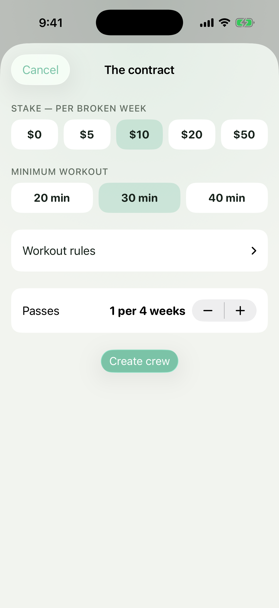
The stake before the yes
Paste the invite (or tap the link) → the full contract shows, stake first, before any Join button. Joining mid-week makes you a spectator until Monday.
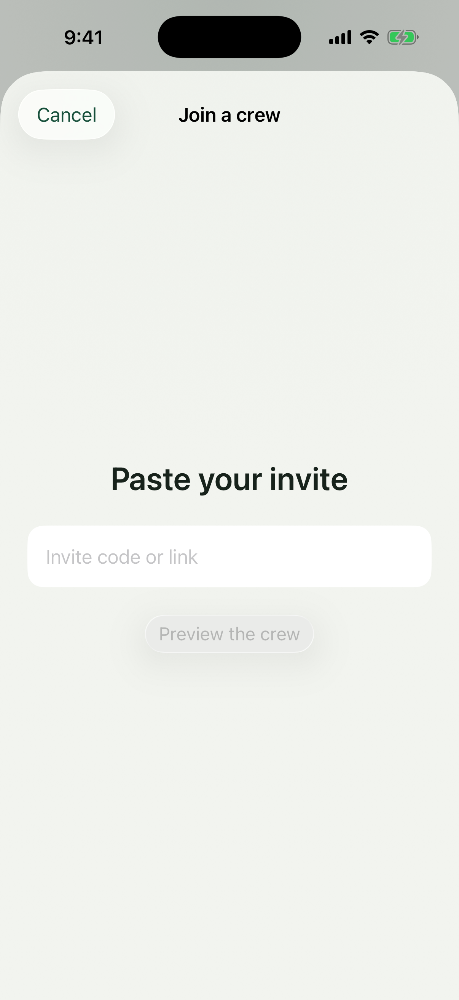
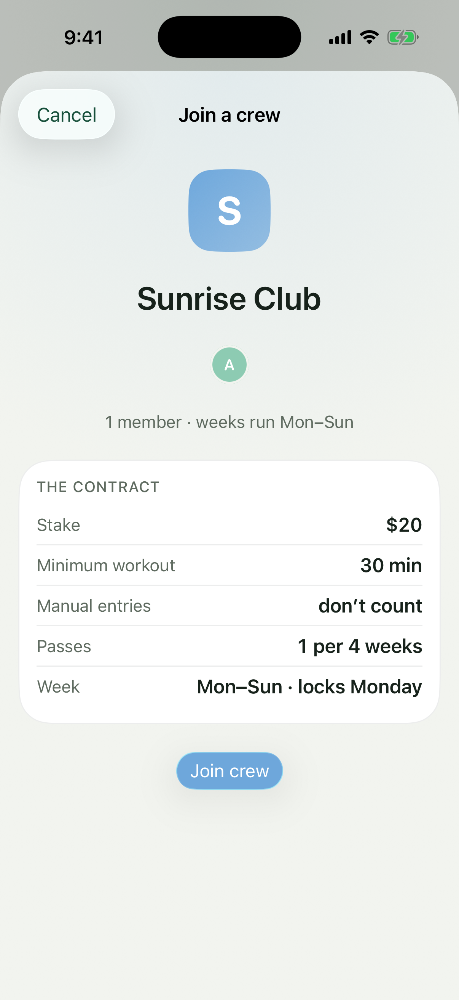
Your week, your terms
Pick specific days (those days then must happen) or stay flexible with a count. Editable all week, frozen the moment Monday starts — the lock posts to the chat naming who's in.
- No commitment by lock → last week's rolls over, announced.
- Specific days show as outlined letters; a committed day you miss goes red.
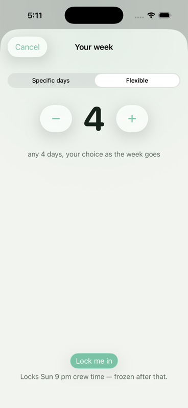
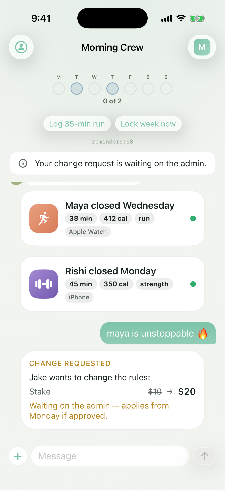
Workouts post themselves
One slim strip of circles up top (letters above: green done, red missed, blue planned); the chat owns the rest, iMessage-style — yours right in the crew color, everyone else left with avatars. The moment Health syncs a qualifying workout the circle springs green and a colorful type-tile card lands in the chat. The + next to the message box adds photos or syncs workouts on demand.
- Flexible lives on the same 7 days — and turns red the moment the target is out of reach.
- Tap the strip for your full week + pass play; auto-sync can be turned off in your settings.
- Reactions, photos, delete-your-own; system cards are permanent.

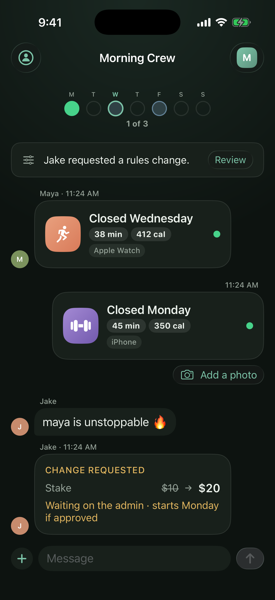
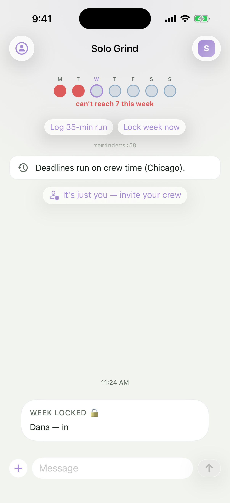

Everyone's week vs their goal
Top-right opens the ONE crew page: who's in, each person against their own goal, every group rule in one card with a 🔒 (changes start Monday), your personal settings (days + auto-sync), the ledger and past weeks.

Request → chat → admin approves
Anyone requests a change; it posts to the chat. The admin approves or declines — and the admin's own changes auto-approve but still post publicly. Everything starts the next Monday; nothing ever changes mid-week. One open request at a time.
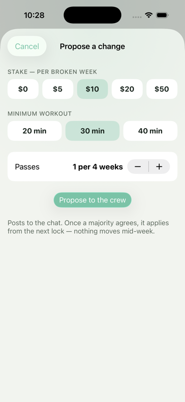
The recap lands in the chat
Monday morning: the recap card shows everyone's circles and consistency, the crew streak, and the exact charges — cent-split deterministically. Settle by Venmo (amount prefilled) or Zelle (handle copied); mark paid, they confirm. A perfect week plays the celebration, once.
- Everyone kept → streak +1 and milestones at 4 / 10 / 26 / 52.
- Everyone broke → no money moves, streak resets, kind copy.
- Gentle nags every 3 days, three times, then silence.
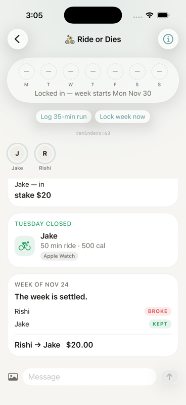


Every component, every state
The design-system catalog the app is built from — day circles, strips, cards, banners, the widget. Feedback on any piece lands everywhere at once.
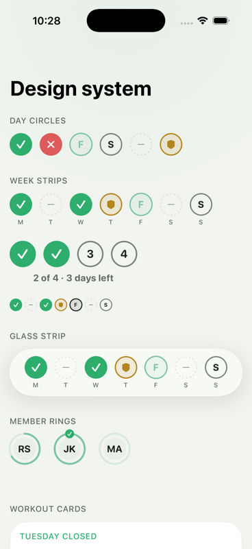
Where it stands
All of the above is tested end to end on every push: 12 UI flows driving the real app + 80 server tests (time-traveled weeks, DST, cent-exact splits, admin approvals), after a live security attack pass. A signed Release archive already builds on this Mac — TestFlight needs only your App Store Connect app record + API key (TESTFLIGHT.md, step 1).
Repo: github.com/Rishiaccelitude/crew · TESTPLAN.md has the full flow matrix.